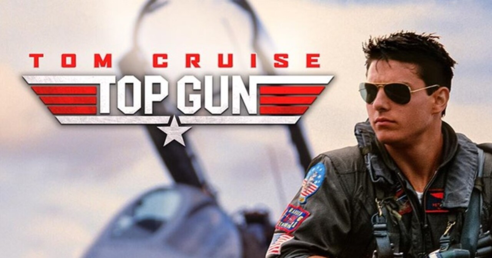
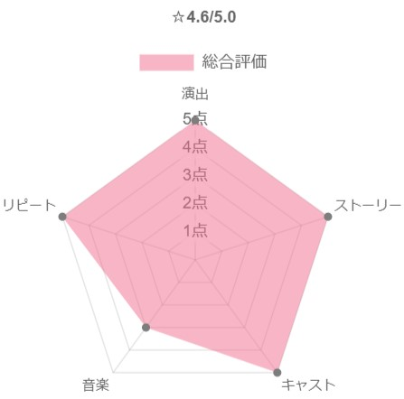

-
Top Gun: Maverick
謎の死を遂げた父親の影を引きずり、天性の勘を頼りに戦闘機を操縦する青年Maverick。あることをきっかけにTOPGUNに送り込まれることに。訓練開始前のパーティで出会った女性に恋をするが、その相手は教官のCharlieであった。やがて2人はお互いの立場を超え恋に落ちる。ある日、訓練中に親友のGooseを亡くしまい、事故ではあったが同じ機体で操縦していたMaverickは大きな責任を感じる。かつて見せていた野性的で攻撃的だった操縦は失われてしまった。その後色々あり無事にTOPGUNを卒業するが、式後の謝恩会中に出撃命令が出され、いきなりの実戦となる。Gooseを亡くした恐怖や自責の念を抱えながらも、任務完了のために仲間と共に戦場に向かう。
-
Top Gun: Maverick
36年ぶりのTOPGUNの続編である。米海軍史上最高のパイロットでありながら、無鉄砲な性格から一向に昇進せず現役であり続けるMaverick。ある日TOPGUN(米海軍エリート・パイロット養成学校)時のライバルであり現海軍トップのIcemanから、達成不可能なミッションに直面したTOP GUNの新世代パイロット達を指導するという特命を授かる。その中にはかつて同じ戦闘機での訓練飛行中に命を落とした相棒Gooseの息子Roosterの姿があった。ミッション達成のためにMaverickが用意した厳しい訓練は次第に生徒の反感を買い、Roosterからは「お前のせいで父親は死んだ」と糾弾される。「もう誰も死なせない」という強い決意を胸に秘め、若きTOPGUNと共に自らも空に命を懸ける。

-
STORY

カーレース「ル・マン24時間耐久レース」の絶対王者Ferrariの会長からの侮辱に腹を立て、ル・マン24での勝利をミッションとしたHenry Ford II。かつてル・マン24に唯一アメリカ人として勝利した男 Carroll Shelbyは現役引退後スポーツカー製造会社を運営していたが、過去の実績を買われ不可能任務のチームリーダーに任命される。Shelbyは妥協を許さない孤高の天才ドライバーKen Milesを招集するが、性格が災いしFordの重役に嫌われ、Milesをドライバーから外そうとしている事を耳にしたShelbyはある作戦を実行する。それが成功しShelbyのチームもなんとかルマン24に出場できることが決定するが、レースの結末は誰も予想できない。車を愛する2人の熱い友情が描かれた素晴らしい物語である。
